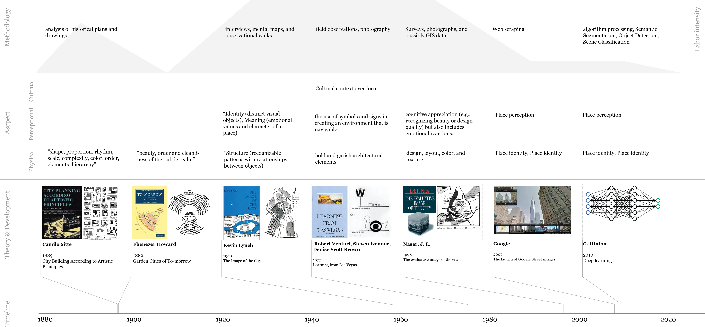
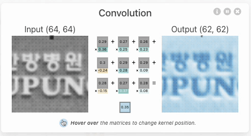
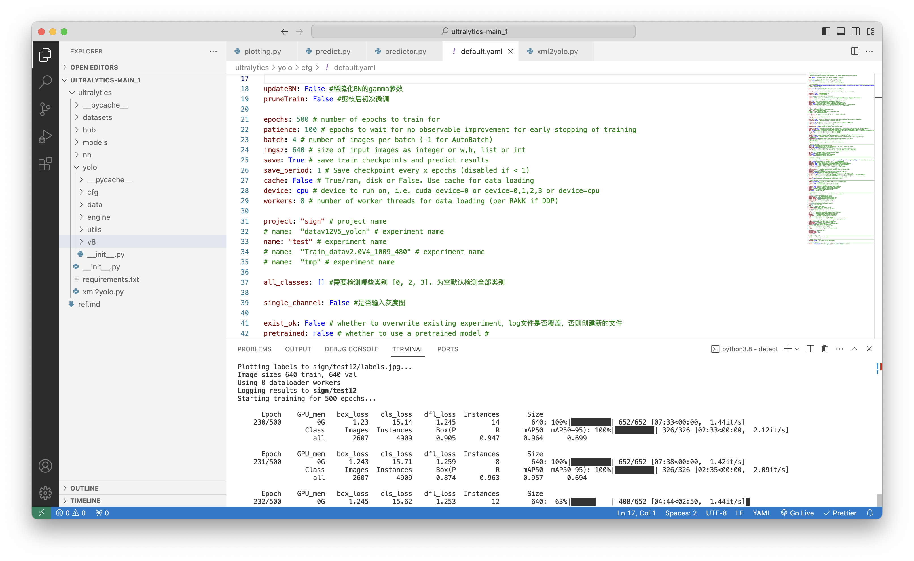

The Sign of the City: Reimagining the New Image of the City Through the Eyes of AI
Hongqian Li


The Image of the City & The Sign of the City
In the book "The Image of the City," Kevin Lynch posited that the imageability of a city is anchored in five fundamental elements: paths, edges, districts, nodes, and landmarks. This framework has profoundly influenced urban planning and design, shaping our understanding of how urban spaces are navigated and perceived. According to Lynch, a well-designed city incorporating these elements would obviate the need for additional signs, as the urban structure itself would inherently guide and inform its inhabitants. As long as you need signs, the image of the city fails.
However nowadays are there any modern cities with no signs? Likely no. In modern cities, people might need signs to navigate and signs can also offer insights about the local culture, commerce, and politics. So, this thesis seeks to challenge the conventional view by Kevin Lynch, by taking what he considers a failure, signs, as an advantage, to reimagine new images of cities.
The Development of Urban Visual Information Studies
Literature Review: the Development of Urban Visual Information Studies
The tradition of incorporating visual information runs through the history of modern urban studies. In the late 1890s, scholars such as Camilo Sitte and Ebenezer Howard began to explore the sensory experiences of pleasure in citizens, focusing primarily on the beauty, shape, and proportion within the public realm. Then, in the 1970s, scholars like Kevin Lynch emerged with new perspectives. His seminal work, 'The Image of the City,' delved into the structure and human perceptions within urban environments. This book has had a significant impact on urban planning and design, profoundly shaping our understanding of how urban spaces are navigated and perceived. Building upon these foundations, scholars in the late 20th century, such as Jack Nasar, introduced aspects of human emotions into the study of urban design and aesthetics.
While these studies laid the foundation for urban visual information, they primarily focused on physical aspects and human perceptions, seldom exceeding these traditional aspects and going beyond into other aspects like cultural, business, and political. Additionally, these studies often relied on traditional methodologies like field observations. With the development of AI, researchers can conduct more extensive visual studies at the street level on a larger scale, requiring less labor and time. This evolution prompts an important inquiry: How can we leverage the capabilities of AI to enhance and build upon these foundational studies, incorporating a broader spectrum of urban elements and insights?
Research Questions & Values
This thesis aims to explore research questions:
What do signs add to the image of the city?
What new categories can signs add to the image of the city?
How do signs affect the way people experience and remember the city?
The potiential research values lie in identifying the distribution of various sign categories and analyzing their impact on people's wayfinding abilities using street signs and exploring the temporary dynamics of the city with temporary signs; Or identifying the content of signs and understanding what the officials or businesses convey to the public; Or identifying the languages of signs the community are using and mapping cultural hubs that have not yet been offically recognized.
Methodology

Research Methodology
The methodology involves a two-step process. Initially, web-scraping techniques are employed to collect a comprehensive set of Google Street View images from the specified research site, New York City. Subsequently, these images are analyzed using Deep Learning technology, specifically the Convolutional Neural Network (CNN) algorithm, to identify and categorize the various signs depicted. Following this classification, the identified sign areas are extracted for further analysis. Optical Character Recognition (OCR) technology is then applied to these extracted segments to discern the content and language present in the signs.
CNN Explain
Heatmap of convolution calculation & Kernel sliding operation
A CNN is a neural network: an algorithm used to recognize patterns in data, widely used in computer vision tasks like image processing, segmentation, and object detection. It also lays the groundwork for numerous advanced models, such as YOLO (You Only Look Once) for object detection and OCR for text recognition.
CNN adjusts the weights in its kernels to learn and identify different data patterns. For example, for object recognition, the output of each convolutional layer is derived by computing the operation between specific regions of the input image and the kernel. Different kernels can extract various features from the image. In practical applications, CNN learns patterns of features from a large dataset of labeled data, enabling it to recognize objects in new images.
Work in Progress
(1) Building sign recognition training datasets

Labeling different signs
For this semester's research, Broadway in Manhattan was selected as the pilot site as it traverses through the borough with many different communities and income groups as you move along the street. Over 5800 Google Street View images along Broadway were collected. Each image was systematically examined, with various signs identified and labeled to enable further study.

20 sign categories
20 sign categories were identified, and they can be grouped into three main categories. The first group encompasses street signs, which include Don't block signs, Do not enter signs, All traffic signs, Street close signs, One-way signs, Parking regulation signs, Direction signs, School crossing signs, Spend limit signs, and Street Name signs. The second group consists of business-related signs, including Shop brand name signs, Shop information signs, Advertising signs, For rent signs, and Promotion signs. The third category is public infrastructure signs, including Bus stop signs, Scaffolding signs, Subway signs, Tourist signs, and Building signs.
(2) Training sign recognition machine learning model
Machine learning model training
The chosen machine learning model for object detection in this study is YOLO. This model was trained using the labeled datasets collected from the Broadway Street View images. As of the current stage, the model has undergone over 200 epochs and has achieved a precision rate of 90.5%.
(3) Text & language recognition
For text content and language recognition, this study employs the Google Cloud Vision API, utilizing OCR technology to identify the text content. The Google Translation API is then applied to determine the language. Due to potential inaccuracies in language recognition, especially with brief sign content, any data with a confidence level below 80% is excluded from the analysis.
Primary Analysis & Findings


Signs on Broadway's west and east sides
In the categories of signs along Broadway, the most prevalent are Shop brand signs (2,154 instances), followed by One way signs (338), and Street name signs (337). Other notable categories include Parking regulation signs (141), Scaffold signs (124), Advertising signs (101), and For lease signs (100). Wayfinding signs, specifically Street name and One way signs, are uniformly distributed for effective citizen navigation. In contrast, regulatory signs like speed limit and Do not enter signs are more concentrated in Upper Manhattan. Temporary signs, such as For lease, promotion, and scaffold Signs, are predominantly found in Lower and Midtown Manhattan, with a significant presence of Scaffold Signs in the Upper West Side.
Regarding the content of these signs, the most commonly occurring words are 'Space', 'Retail', 'Beauty', and 'Lease', closely followed by 'Coffee', 'Rent', and 'Mobile'. The most frequently featured brands in the sign content are major banks, specifically Citi Bank, Chase Bank, and Bank of America, alongside a notable presence of Starbucks Coffee.
In terms of the language of these signs, English is predominant with 3,342 instances. Other languages show distinct patterns: Chinese (33) and Italian (30) signs are more evenly distributed, French signage (26) is primarily found in Midtown, and Korean signs (14) are concentrated in Lower and Upper Manhattan. Notably, Spanish signs (76) are more prevalent in Upper Manhattan, reflecting the area's diverse linguistic landscape.